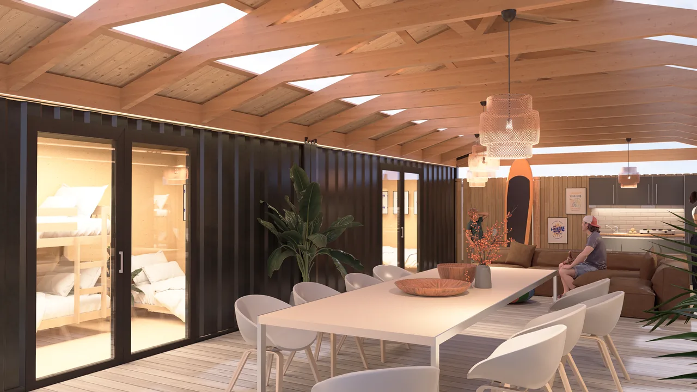
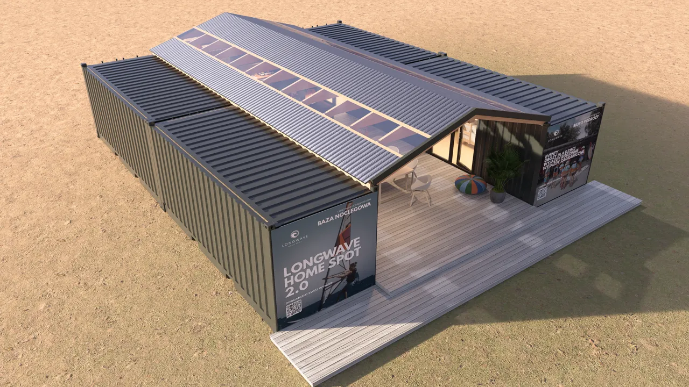
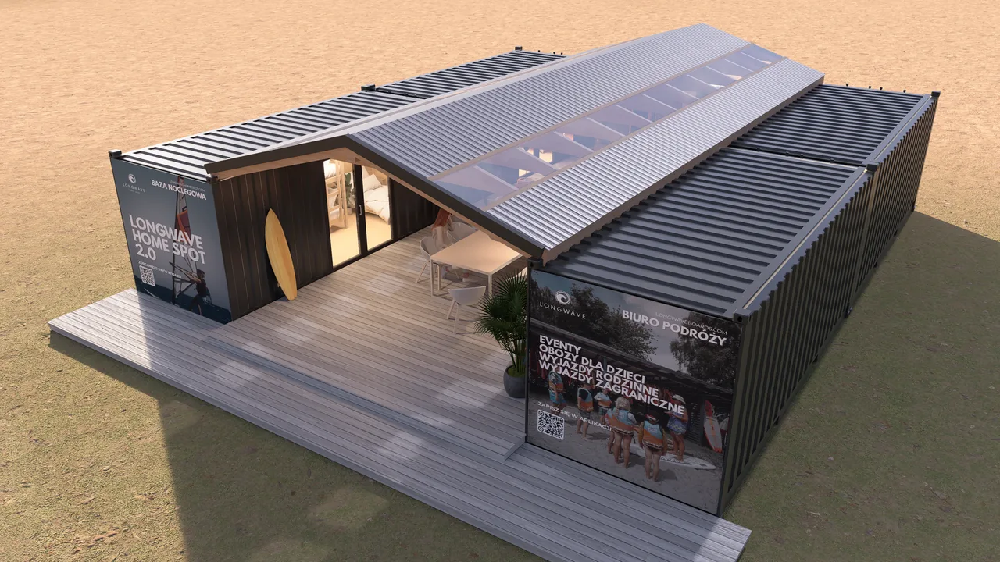

01 / Idea miejsca
Blisko siebie.
W swoim rytmie.
Tworzymy kolejne miejsce w świecie LONGWAVE. Zaczynamy od tego, co lubimy najbardziej: wspólnego czasu, aktywności i odpoczynku.
Home Spot 2.0 to nowy rozdział naszej historii. Zajrzyj do środka i zobacz, jak wyobrażamy sobie tę przestrzeń.
Zobacz projekt z bliska

02 / Wspólna przestrzeń
Zostań jeszcze chwilę.
Poranna kawa. Rozmowy przy stole. Chwila dla siebie. Właśnie wokół takich momentów budujemy pomysł na Home Spot 2.0.
Pod wspólnym dachem
Otwarty taras, drewno i dużo światła.
Miejsce przy stole
Przestrzeń na spotkania i rozmowy.
Ten sam klimat LONGWAVE
Wspólny czas, aktywność i odpoczynek.
03 / Wizualizacje
Spójrz z innej strony.



Pokazujemy wizualizacje koncepcji, a nie zdjęcia gotowego obiektu. Szczegóły miejsca i rezerwacji ogłosimy po ich potwierdzeniu.
04 / Początek nowej historii
Widzimy się
w nowym rozdziale.
Premiera projektu.
Ogłoszenie Home Spot 2.0 zaplanowano na 1 grudnia. O miejscu i uruchomieniu rezerwacji opowiemy po potwierdzeniu szczegółów.
Zapytaj o Home Spot +48 882 334 889